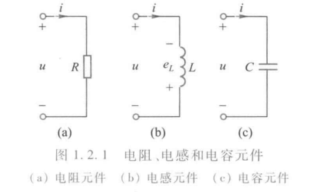
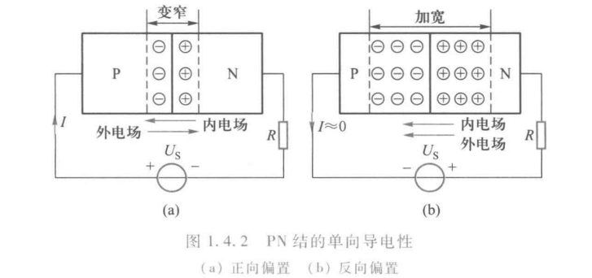
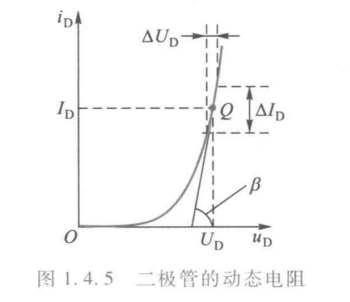
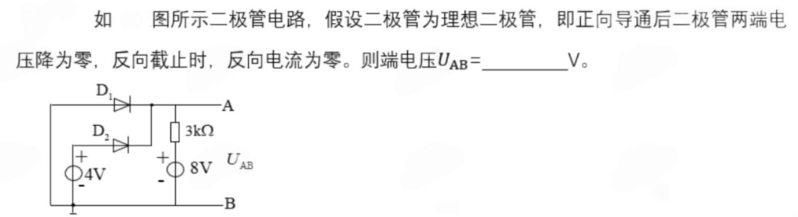
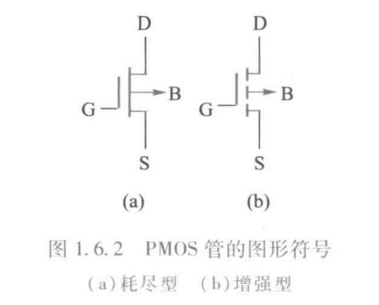
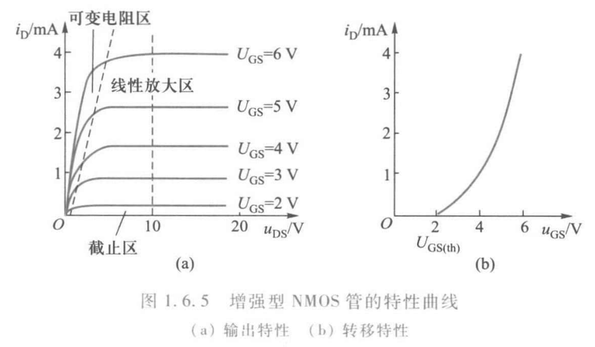

Chap1 电路和电路元件 ¶
电路和电路的基本物理量 ¶
概念
- 强电电路：用于实现电能的传输和转换；电压较高、电流和功率较大
- 弱电电路：用于进行电信号的传递和处理；电压较低、电流和功率较小
- 直流电流（DC
） ：电路的大小和方向都不随时间变化，用 I 表示 - 交流电流（AC
） ：电流的大小和方向都随时间变化，用 i 表示
电压的方向是电位降低的方向；电动势的方向是电位升高的方向
关联参考方向
对电源以外的元件假定电压参考方向与电流参考方向一致，即电流参考方向从电压参考方向的 + 端流向 - 端
当电流方向和电压方向关联时，\(p=ui>0\)，吸收功率；\(p=ui<0\)，输出功率
对电源上的电流、电压规定为非关联参考方向，对电阻、电感、电容上的电压、电流规定为关联参考方向
电阻、电感和电容元件 ¶
电阻元件 ¶
电阻：表征电能的消耗，是一个耗能元件
电感元件 ¶
电感：表征磁场能的储存，是一个储能元件
推导过程
电容元件 ¶
电容：表征电场能的储存


独立电源元件 ¶
电压源和电流源 ¶
电压源（理想电压源）
源电压等于端电压

电流源（理想电流源）
源电流等于端电流

电源符号
独立电源的符号可以用其伏安特性记忆。电压源端电压恒定，平行于横轴。电流源端电流恒定，平行于纵轴。
实际电源的模型 ¶
实际电压源：理想电压源与电阻串联
实际电流源：理想电流源与电阻并联
PS：两种实际电源模型可以等效互换，推荐用伏安特性曲线记忆。

二极管 ¶
PN 结及其单向导电性 ¶
半导体
载流子（运载电荷的粒子） = 自由电子（带负电） + 空穴（带正电）
- 本征半导体
- 自由电子和空穴数量相等
- 纯净的半导体如硅、锗
- P 型半导体
- 自由电子小于空穴数量
- 掺入三价元素如硼、铝、镓
- N 型半导体
- 自由电子大于空穴数量
- 掺入五价元素如磷、砷、锑
PN 结
- 在 P 型半导体和 N 型半导体交界面形成的空间电荷区
- 空间电荷区产生内电场阻挡多子扩散并推动少子漂移
- 多子的扩散运动和少子的漂移运动达到平衡，空间电荷区的宽度稳定
记忆方法
可以这样记忆，P（positive）型半导体空穴多（正电

单向导电性
-
正向偏置
- P 区一侧接外电源正极，N 区一侧接外电源负极
- 空间电荷区变窄
- 形成较大的正向电流
- PN 结处于导通状态
- 正向电阻数值很小
-
反向偏置
- 空间电荷区变宽
- 形成很小的反向电流
- PN 结处于截止状态
- 反向电阻数值很大
二极管的特性和主要参数 ¶
概念
- 二极管：PN 结、电极引线、管壳
- 阳极：由 P 侧引出的电极
- 阴极：由 N 侧引出的电极

伏安特性
-
正向特性
- 死区：电压小，基本不导通（死区电压硅管 0.4~0.5V，锗管约 0.1V）
- 非线性区：开始导通，电流小
- 导通区：近似线性（导通压降硅管 0.6~0.7V，锗管 0.2~0.3V）
-
反向特性
- 正常工作区：截止，反向电流很小
- 反向击穿区：反向电流过大，反向击穿
主要参数：最大正向电流 \(I_{FM}\)、最高反向工作电压 \(U_{RM}\)、反向电流 \(I_R\)、最高工作频率 \(f_M\)
PS：F-forward，R-reverse，B-breakdown，M-maximum
二极管的工作点和理想特性 ¶
工作点：\(U_D=U_S-RI_D\)
静态电阻：\(R_D=\frac{U_D}{I_D}\)
动态电阻：\(r_D=\frac{dU_D}{dI_D}\)

理想特性：分为考虑导通压降和忽略导通压降

二极管电路分析
- 单个：阳极电位高于阴极电位足够大小
- 多个：
- 阳极接于同一点（同电位
） ，阴极电位最低的优先导通 - 阴极接于同一点（同电位
） ，阳极电位最高的优先导通 PS：电压越大，越容易导通
- 阳极接于同一点（同电位
例题

两个二极管共阳极，D1 阴极电位更低，先导通；计算可知 D2 为负向电压，不导通。
例题

两个二极管共阴极，D2 阳极电位更高，先导通；考虑 D2 导通的情况，是不可能成立的。
思考

对于交流电源 Us 而言，在二极管导通情况下，U0 恒为 U1+Uon，截止情况下，U0 恒为 Us，所以只需要判断出临界点即可。这是一个限幅电路。
 考虑理想二极管，由于反向电压截止，反向电流消除，这是一个整流过程。
考虑理想二极管，由于反向电压截止，反向电流消除，这是一个整流过程。
稳压二极管 ¶

伏安特性：反向击穿区特性曲线陡直（稳压特性）
主要参数：稳定电压 \(U_Z\)，动态电阻 \(r_Z\)，稳定电流 \(I_Z\)、最大耗散功率 \(P_{ZM}\)、电压温度系数 \(\alpha_{U_Z}\)
稳压条件：\(U_I>U_Z\)，有一定的 \(I_Z\)
稳态二极管的动态电阻越小，稳压效果越好
稳压二极管工作在反向击穿状态
发光二极管和光电二极管 ¶
发光二极管
- 简称 LED
- 工作在正向偏置状态
- 导通压降大于普通二极管
光电二极管
- 又称光敏二极管
- 工作在反向偏置状态
- 反向电流随光照强度增加而增加
双极晶体管 ¶
基本结构和电流放电作用 ¶
晶体管
双极晶体管（BJT）简称晶体管、三极管

- 两个 PN 结：发射结、集电结
- 三个电极：发射极 E（emiter
） 、基极 B（base） 、集电极 C（collector） - 三个区：
- 发射区：杂质浓度高
- 集电区：杂质浓度高，比发射区稍低
- 基区：杂质浓度相对很低

电流放大作用
条件：发射结正向偏置，集电结反向偏置

小的基极电流变化量 -> 大的集电极电流变化量，具有电流放大作用（故三极管是电流控制性器件）
特性曲线和主要参数 ¶
输入特性曲线
输入特性曲线：以 \(u_{CE}\) 为参变量，\(i_B\) 和 \(u_{BE}\) 之间的关系，即
输出特性曲线
输出特性曲线：以 \(i_B\) 为参变量，\(i_C\) 和 \(u_{CE}\) 之间的关系，即

- \(I_B=0\) 曲线以下区域
- 集电结、发射结均反向偏置
- 无放大作用
- \(I_C=I_{CEO}\approx 0\) \(I_{CEO}\) 为穿透电流
- 集电极和发射极相当于断开开关——用于开关电路
- \(U_{CE}\le U_{BE}\) 区域
- 发射结、集电结均正向偏置
- 无放大作用
- 有 \(I_C\)，但 \(U_{CE}=U_{CES}\approx 0\)
- 集电极和发射极相当于接通开关——用于开关电路
- 发射结正向偏置，集电结反向偏置
- 有放大作用——用于放大电路
主要参数
- 电流放大系数 \(\bar{\beta}=\frac{I_C-I_{CEO}}{I_B}\approx \frac{I_C}{I_B}（直流）\) \(\beta=\frac{\Delta I_C}{\Delta I_B}（交流）\)
- 穿透电流 \(I_{CEO}\)
- 集电极最大允许电流 \(I_{CM}\)
- 集电极最大允许耗散功率 \(P_{CM}\)
- 集电极——发射极反向击穿电压 \(U_{(BR)CEO}\)
注意
硅管的导通电压约 0.5V，锗管的导通电压约 0.1V；工作在放大电路中时，NPN 满足 \(V_C>V_B>V_E\)，PNP 满足 \(V_E>V_B>V_C\)
例题
在放大电路中，若测得某晶体管的三个极的电位分别是 7V，1.5V，1.3V，则该管为 ____。
最小电位差是 0.2V，只有锗管才能导通，然后有基极电位和发射极电位出在 1.5V 与 1.3V 中，即集电极电位一定是 7V。由于 \(V_C>V_B\)，且集电结在反向偏置状态，可知电位高的是负极（N
简化的小信号模型 ¶
受控源
受控源：非独立电源，输出电压或电流受电路中另一电压或电流的控制
- 电压控制电压源（VCVS
） ：\(\mu\) 为电压放大系数 - 电压控制电流源（VCCS
） ：\(g\) 为转移电导 - 电流控制电压源（CCVS
） ：\(r\) 为转移电阻 - 电流控制电流源（CCCS
） ：\(\beta\) 为电流放大系数

比例系数为常数时，受控源为线性元件
B-E 之间，工作在输入特性的近似线性区，用电阻 \(r_{be}\) 模拟
\(r_b\)=200Ω，\(I_E\) 单位 mA
C-E 之间，\(I_C=\beta I_B\)
\(I_C\) 和 \(U_{CE}\) 基本无关

双极晶体管是电流控制电流源
绝缘栅场效晶体管 ¶
场效晶体管：简称 FET，分为结型场效晶体管、绝缘栅场效晶体管
基本结构和工作原理 ¶
MOS 管
MOS 管：金属 - 氧化物 - 半导体场效晶体管，可分为：
- N 沟道绝缘场效晶体管（NMOS）和 P 沟道绝缘场效晶体管（PMOS）
- 增强型绝缘场效晶体管（无沟道）和耗尽型绝缘场效晶体管（有沟道）


场效晶体管的源极相当于晶体管的发射极，漏极相当于集电极，栅极相当于基极
PS：G- 栅极，S- 源极，D- 漏极，电压控制电流型器件（\(U_{GS}\) 控制 \(I_D\)，栅源电压控制漏极电流）
特性曲线和主要参数 ¶
特性曲线 ¶
输出特性：以 \(u_{cs}\) 为参变量时，\(i_D\) 和 \(u_{DS}\) 之间的关系，即
转移特性：以 \(u_{DS}\) 为参变量时，\(i_D\) 和 \(u_{CS}\) 之间的关系，即
可近似表示为


主要参数 ¶
主要参数
- 夹断电压 \(U_{GS_{off}}\) 和开启电压 \(U_{GS_{th}}\)
- 饱和漏极电流 \(I_{DSS}\)，即 \(u_{GS}=0\) 时的漏极电流
- 低频跨导 \(g_m\)
- 最大漏极电流 \(I_{DM}\) 和最大耗散功率 \(P_{DM}\)
- 最大漏 - 源击穿电压 \(U_{(BR)DS}\)
- 栅源直流电阻 \(R_{GS}\)
简化的小信号模型 ¶

评论区